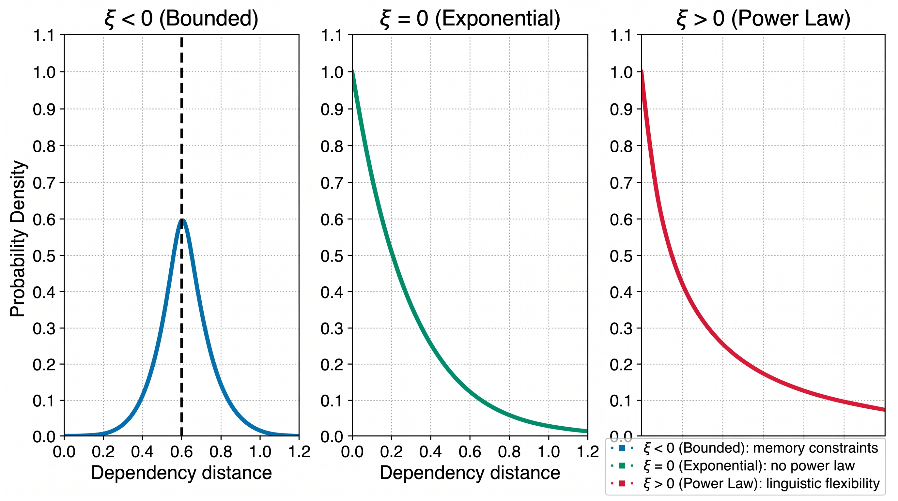

Contributions
What the paper actually claims, stated once and directly.
A new tail-risk statistic
The Generalized Pareto shape parameter ξ is introduced as an orthogonal descriptor of dependency distributions, with head-finality effects 1.9× stronger than for mean dependency distance (MDD).
A register test, run honestly
The hypothesis that spoken language has lighter tails is tested directly. It holds at the matched-pair level (3 of 4 pairs significant after Holm correction) but not at the population level, and the effect is threshold-sensitive.
ξ against the existing power-law measure
ξ and the power-law exponent α are reciprocal parameterizations of the same tail (r = −0.73), yet ξ predicts register far better in regression (AICc 26.7 vs. 63.4).
EVT brought into linguistics without reinventing it
Peaks-over-threshold estimation, standard in finance and hydrology for three decades, is adapted here alongside mixed-effects models and permutation baselines rather than a wholly new framework.
Method
What goes in, what happens to it, and what comes out.

-
Data: 18 UD treebanks, one HuggingFace source
Universal Dependencies v2.18 treebanks are pulled from the HuggingFace repository
commul/universal_dependencies, keeping treebanks with at least 500 sentences. The result is 18 treebanks across 18 languages and 8 language families (Indo-European, Afro-Asiatic, Japonic, Sino-Tibetan, Koreanic, Uralic, Turkic, creoles), covering 33,030 sentences and 558,144 dependency arcs. Four treebanks form matched spoken/written pairs in the same language: Slovenian, French, English and Turkish. -
Extracting and normalizing dependency distance
For every arc in the CoNLL-U head column, dependency distance is the absolute linear position difference between head and dependent, excluding the artificial ROOT arc. Each distance is then divided by sentence length (DD_norm = DD / sentence length), the standard control for the fact that longer sentences mechanically permit longer arcs.
-
Fitting the tail: peaks-over-threshold
For each treebank, a Generalized Pareto Distribution is fit to the values above the 75th percentile of normalized distance (with the 80th and 90th checked for sensitivity), using maximum likelihood via
scipy.stats.genpareto. The fitted shape parameter ξ is the paper's headline statistic: ξ < 0 means a hard upper bound on dependency length, ξ = 0 means exponential decay, ξ > 0 means an unbounded, heavy tail. Confidence intervals come from 1,000 bootstrap resamples. -
A power-law baseline for comparison
A power-law tail exponent α is fit to the same threshold-exceeding data following Clauset et al. (2009), since α and ξ are mathematically reciprocal (α ≈ 1/ξ) and the paper needs to show ξ is not just old wine in a new bottle.
-
Testing register and typology
For the four matched spoken/written pairs, sentences are split into ten length-matched deciles per register and compared with a paired Wilcoxon test, avoiding the pseudo-replication error of treating individual arcs as independent observations. Linear mixed-effects models then relate ξ to register and typological features (head-finality, word-order flexibility, Grambank morphosyntactic features), with language family as a random intercept where the fit supports one.
-
Checking that it generalizes
Leave-one-family-out cross-validation holds out each of the 8 families in turn, trains on the rest, and measures how well ξ and MDD predict the held-out family.
Results
The paper's headline numbers, each against what it was measured on.
Figure gallery
Click any figure to enlarge.
Limitations
What the paper says it does not show.
- Annotation heterogeneity. Flat/list/conj/appos arc handling varies across UD treebanks. ξ estimates shift by ±15.3% when these arc types are excluded, versus only ±2.0% for MDD — a 7.5× sensitivity gap, meaning some register-level ξ differences may reflect annotator choices rather than genuine linguistic variation.
- Small matched-pair sample. Only 4 language pairs have both registers annotated, and they differ in family, genre, and register definition (task-oriented dialogue, conversational interviews, learner speech, news writing). A universal "spoken lighter-tail" claim needs larger, more homogeneous samples.
- Treebank size confound. The smallest treebank, Nigerian Pidgin, has just 20 sentences and cannot support a stable tail estimate. Per-family LOFO RMSE varies more than 5-fold, suggesting sample size and annotation quality dominate some family-level effects.
- Threshold sensitivity. The choice of the 75th percentile threshold is not fully principled. The register effect on ξ reverses sign at the 90th percentile, which is the opposite of what a robust memory-constraint effect should do if it strengthens in the deepest tail.
- Correlational, not causal. All results are observational. Whether head-finality causes tail shape, whether register differences reflect production constraints or genre conventions, and whether memory limitations drive the pattern cannot be settled without experimental manipulation or computational modeling.